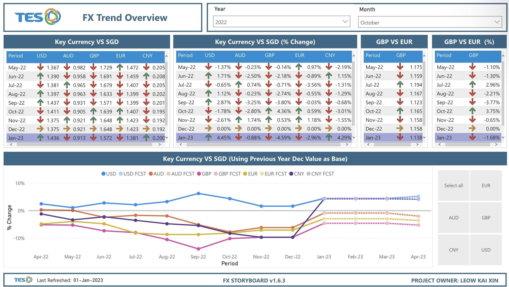
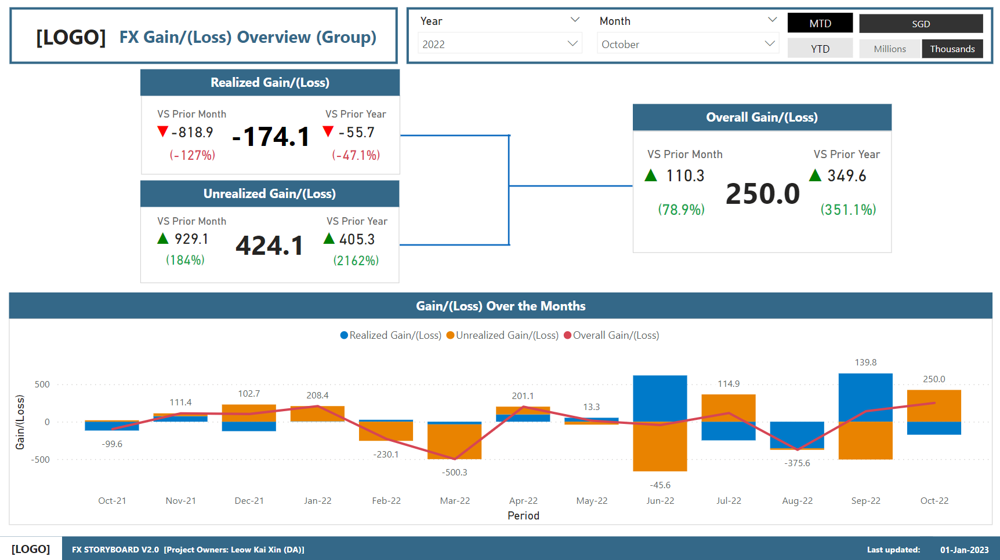
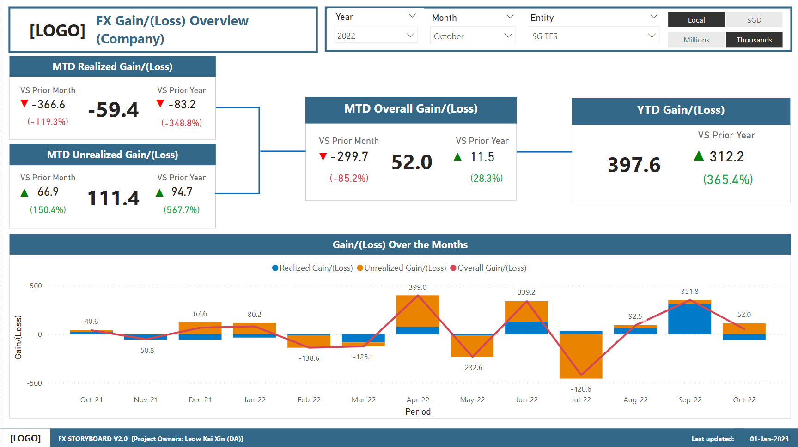
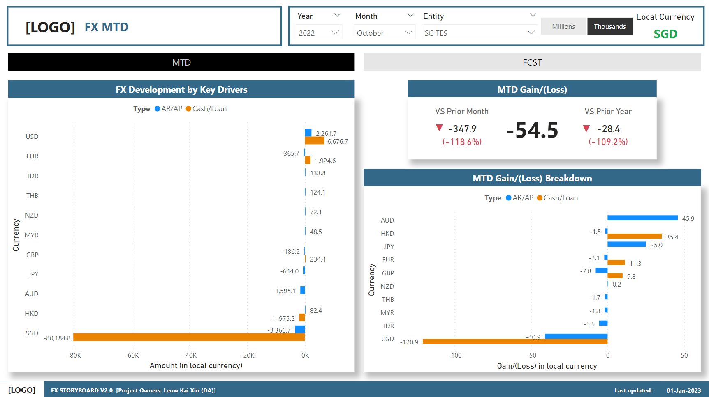

Forex Details
The Forex (FX) Storyboard displays details of the Realized and Unrealized Gain/Loss. The organisation has it operations in various countries, transactions in different currenies comes into play. With this storyboards, the user is able to manage its cash position so as to reduce realized and unrealized loss to potentially improve gains.
The first dashboard is the "FX Trend Overview" Dashboard. The dashboard highlights the exchange rate trends of the key currencies vs SGD.
The second dashboard is the "FX Gain (Loss) Overview (Group)" Dashboard. In this dashboard, user are able to see the overall gain/loss in both realized and unrealized in group level.
The third dashboard is the "FX Gain (Loss) Overview (Company)" Dashboard. In this dashboard, user are able to see the overall gain/loss in both realized and unrealized in company level.
The fourth dashboard is the "FX MTD Dashboard". This dashboard shows the breakdown of Cash, Loan, Account Receivables (AR), Account Payables(AP) as well as the month to date (MTD) Gain/Loss by each currencies.
